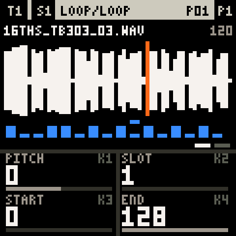
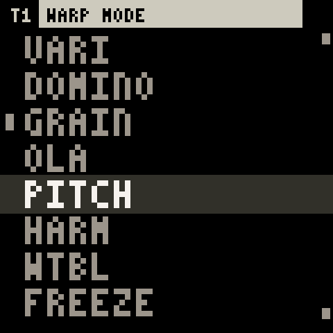
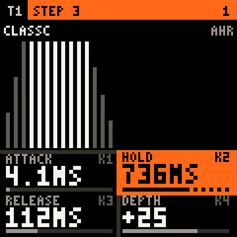
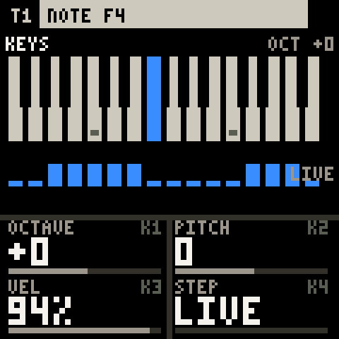
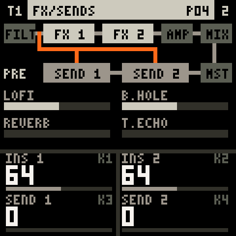
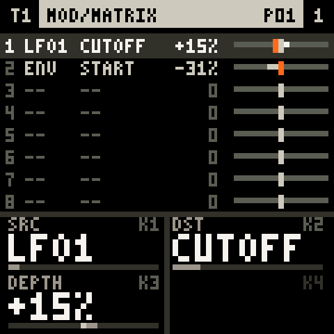
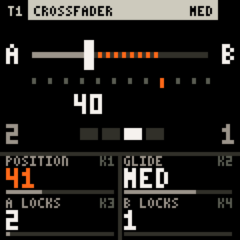
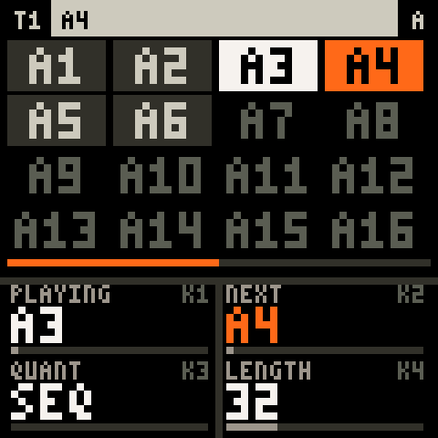
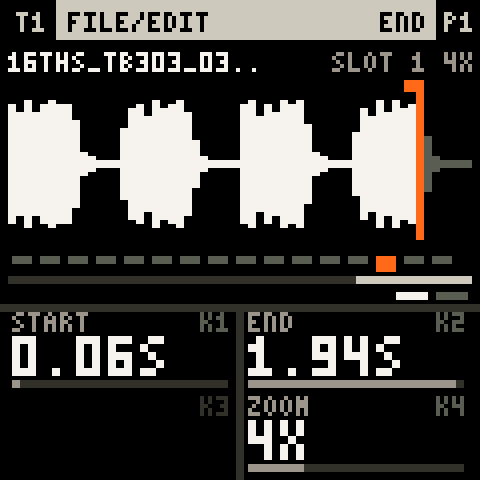
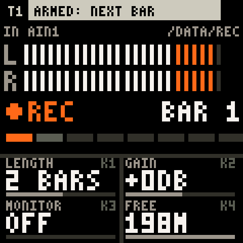

TracksK1
The norns loop mangler, rebuilt for the FM-1. Six tracks of loops, slices and grains under sixteen keys.
Every chopper works on a range of the loop. Move the range and the pattern you made lands on fresh sound.
A studio of loop tools on sixteen keys and a handful of knobs.
Loop it, trig it, slice it, play it like a synth.

Tape, grains, overlap-add, spectral freezes. Tempo and pitch apart.

Any parameter on any step. Conditions, chance, ratchets, FILL. Up to 256 steps.

Sixteen keys scrub, stutter and jump through the loop. Or play it chromatically.

Six filters, two inserts per track, two send buses, a master.

Two LFOs, a mod envelope, velocity and a matrix that reaches anything.

Two scenes on a crossfader with glides. Four banks of sixteen patterns, launched from the keys.


Your WAVs in a 128-slot pool, a trim editor, and REC: sample the input or the master straight into a slot. Projects are files.


Elasticat is a Fantasy CFW: it runs in RemoteFM1, never on the FM-1 itself. Your FM-1 stays as it is.
Make RemoteFM1/audio/ and drop WAV or AIFF loops in. A tempo in the name (bpm120) syncs them.
Point it at RemoteFM1/ and press PLAY. An FM-1 running RemoteFM1 gives you the real knobs and keys.